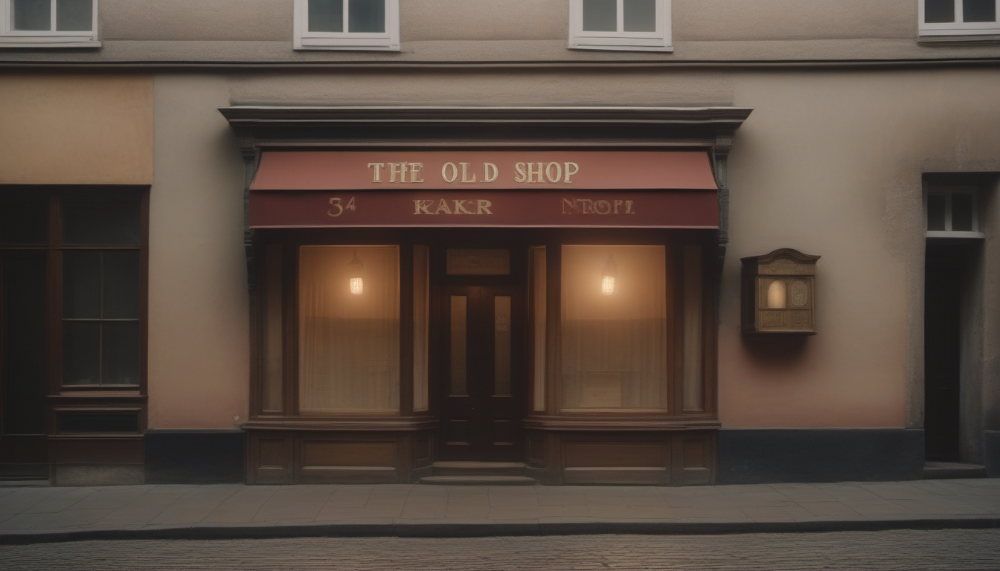
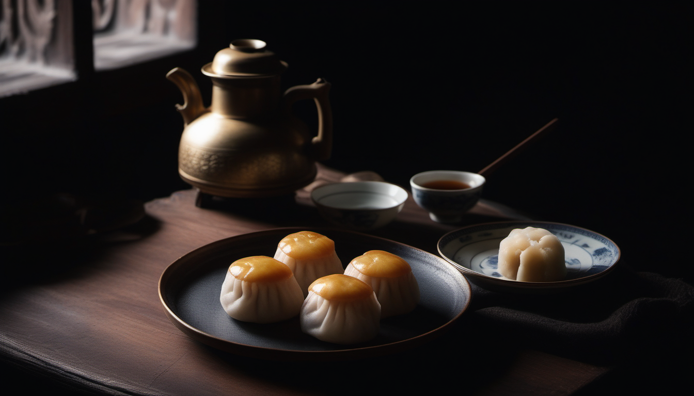
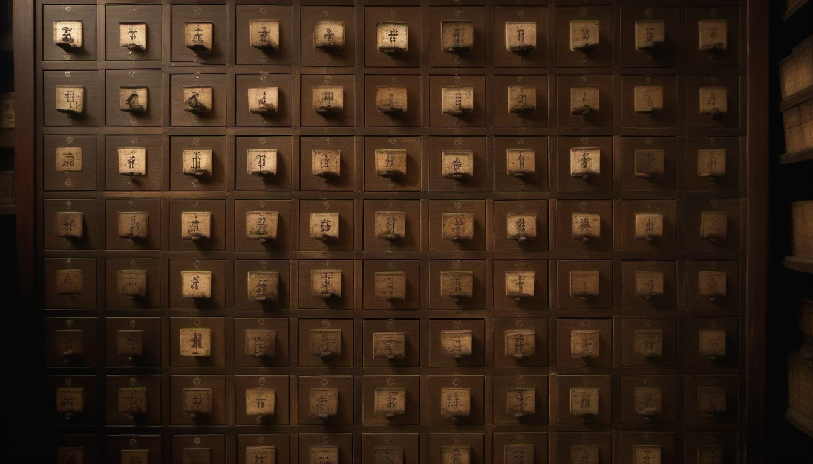
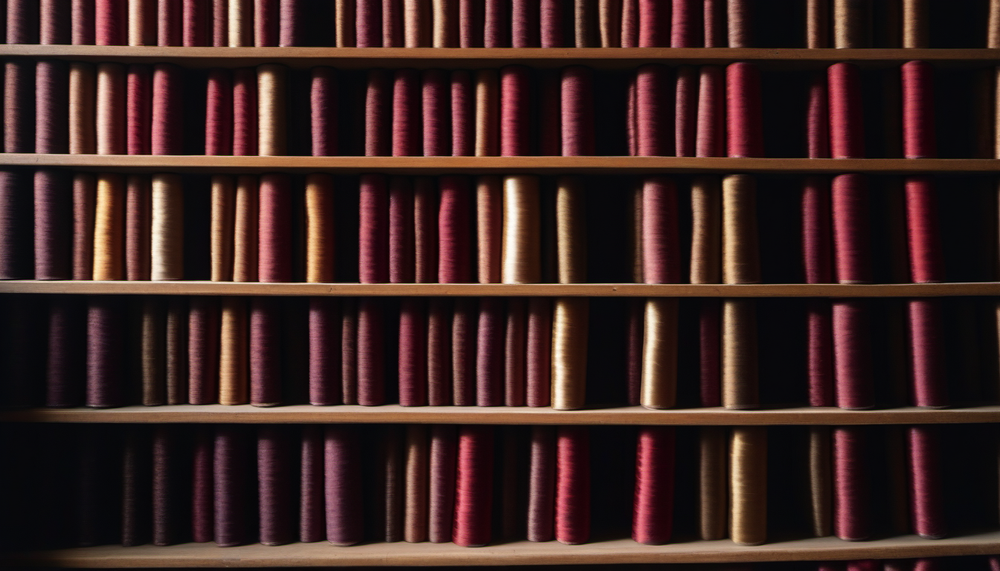
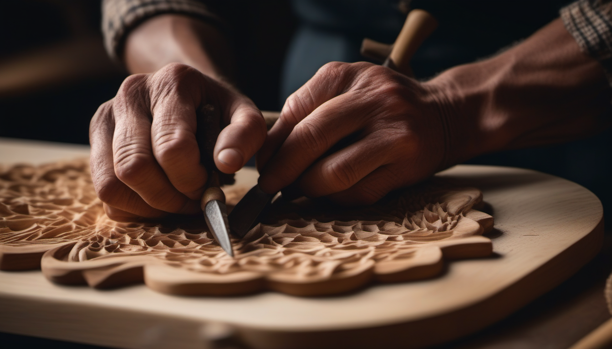
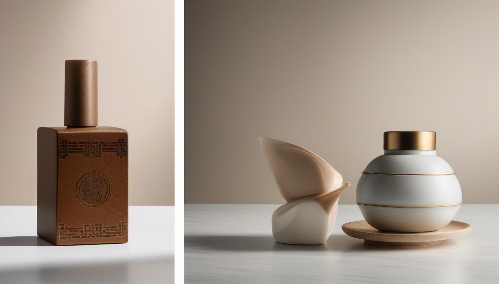

不做老字号的「毒唯」，而是做老字号与公众间的「鹊桥」。
用最真实的痕迹——一张老照片、一双工匠的手、一件用了四十年的工具——
在最日常的路径上——地铁站、步行街、文化馆——
创造最自然的相遇。
公众不需要被"教育"老字号有多好。
他们只需要在通勤路上偶然看到一张照片、在周末带孩子玩时参加一场活动、在朋友圈刷到一张有声明信片。
遇见，就够了。

| 宫廷之味 | 全聚德、烤肉宛 / 烤肉季 |
| 酱缸里的北京 | 六必居、王致和、天源酱园 |
| 茶香与点心 | 张一元、吴裕泰、稻香村 |
| 夏与冬的味道 | 东来顺、信远斋、北冰洋 |
| 胡同里的小吃 | 天兴居、都一处、锦芳、壹条龙、金糕张 |

| 药柜里的时间 | 同仁堂、鹤年堂、永安堂 |
| 必不敢省人工 | 中药炮制工序 |
| 一抓准 | 老药工抓药特写 |
| 药方里的智慧 | 安宫牛黄丸、六味地黄丸 |

| 从长袍到中山装 | 瑞蚨祥、谦祥益 |
| 脚下的北京 | 内联升、步瀛斋 |
| 头顶的讲究 | 盛锡福、马聚源 |
| 一针一线 | 各品牌老裁缝、老鞋匠 |

| 纸与墨 | 荣宝斋、一得阁 |
| 笔与锋 | 戴月轩 |
| 火与彩 | 北京市珐琅厂 |
| 木与榫 | 龙顺成 |
| 匠与心 | 工艺美术类品牌 |


| 时间 | 展览线 | 活动线 | 内容线 | 技术线 | 传播线 |
|---|---|---|---|---|---|
| 6 月 | 6 个展览场地确认、策展方案深化优化 | 5 场主题活动方案细化落地 | 启动景泰蓝、同仁堂工匠拍摄工作；确认北青报全部选题 | 启动 H5 页面设计与开发工作 | 敲定整体传播方案，启动品牌权益对接工作 |
| 7 月 上 | 完成首展照片精选与输出，采购展览搭建物料 | 筹备各类活动配套物料 | 持续推进工匠拍摄，开展北青报第一篇专访采写 | 推进 H5 前端开发工作 | 发起品牌联动·晒传家宝活动，完成 KOL 合作邀约 |
| 7 月 下 | 开展首展搭建筹备，完成第二展策展方案确认 | 上线活动招募宣传物料 | 完成"这双手"先导照片拍摄与交付 | 完成 H5 内测并针对性修复优化问题 | 发布"这双手"主题内容，开启公众策展征集活动 |
| 8 月 上 | 完成第一展搭建并正式开幕，同步完成第二展搭建与开幕 | 启动「小小美食家」活动招募 | 开展景泰蓝主题视频精剪制作 | H5 正式上线投入使用 | 第一展开幕专题传播，北青报首篇深度稿件 |
| 8 月 下 | 第一、二展日常运营维护 | 落地举办「小小美食家」主题活动 | 景泰蓝主题视频成片输出，发布北青报第一篇深度稿件 | H5 运维，上线活动云相册功能 | 上线景泰蓝主题视频、老白视频，云相册专题传播 |
| 9 月 上 | 完成第三展搭建并开幕，推进第四展前期筹备 | 启动「小小匠人」活动招募 | 同仁堂主题视频精剪，第一条活动短视频制作 | H5 日常运维 | 第三展开幕传播，穿越话题 + 同仁堂视频 + 北青报第二篇 |
| 9 月 下 | 完成第四展搭建并正式开幕 | 落地举办「小小匠人」主题活动 | 同仁堂主题视频交付，第一条短视频成片 | H5 日常运维 | 上线侯宇 Vlog、第一条活动短视频，开启公众提问征集 |
| 10 月 上 | 完成第五展搭建并开幕，推进第六展前期筹备 | 落地第四、五场亲子主题活动 | 第二、三条活动短视频，北青报第三、四、五篇采写 | H5 日常运维 | 上线第二条活动短视频，发起抖音手艺挑战话题 |
| 10 月 下 | 完成第六展搭建并正式开幕 | 落地举办「小小创想家」主题活动 | 第二、三条短视频交付，问答主题视频制作 | H5 日常运维 | 第三条短视频 + 北青报系列稿件 + 春典播客 + 第六展开幕 |
| 11 月 | 完成全部展览撤展工作 | 完成所有活动收尾复盘工作 | 完成问答视频交付，实现全周期内容统一归档 | 完成全周期数据汇总，输出项目数据报告 | 上线问答视频 + 陈佳现场 + 收官通稿 + 全部数据交付 |
百思传媒 × 寻找原汁原味北京老字号
北京市商务局 × 北京老字号协会